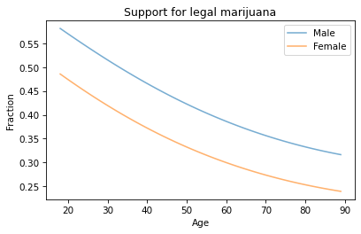
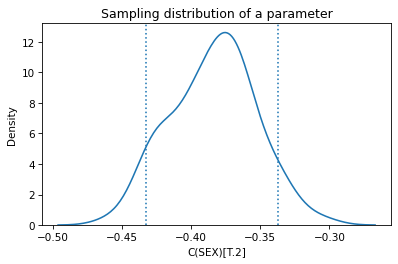
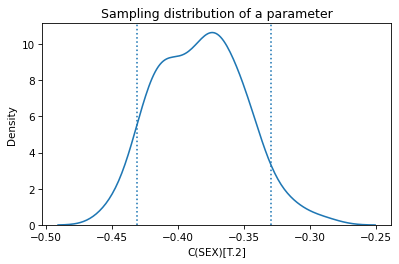
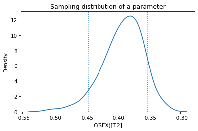

Resampling and Logistic Regression#
Here’s a question from Reddit’s statistics forum:
I am trying to do parametric bootstrap for logistic regression but I don’t know what the random error terms should be. I know how to do it with linear regression since the error terms follow a normal distribution. Really appreciate any pointers to resources about this topic.
One of the responses recommends this paper: “An Application of Bootstrapping in Logistic Regression Model”, by Isaac Akpor Adjei and Rezaul Karim.
The paper suggests two ways to compute the sampling distribution of the parameters of a logistic regression by bootstrap sampling. They characterize one as parametric and the other as non-parametric, and advise:
The non-parametric bootstrap [relies] on weaker assumptions (or no assumptions at all) about the underlying distribution of the population. Statistical practitioners should use non-parametric procedures only in so far as the assumptions about the underlying distribution are seriously doubtful in their validity. … However, when assumptions are not violated, non-parametric procedures will usually have greater variance (in point estimation), less power (in hypothesis testing), wider intervals (in confidence interval estimation), lower probability of correct selection (in ranking and selection) and higher risk (in decision theory) when compared to a corresponding parametric procedure (Efron and Tibshirani, 1994 [1] ).
The premise of this advice is that the parametric and non-parametric methods are answering the same question in different ways, and that one might be preferred over the other because the results are preferable in one way or another. It is also based on the assumption that the sampling distribution of the parameters – and the statistics derived from it – are uniquely and objectively defined.
I disagree with these premises. The parametric and non-parametric methods they present are based on different modeling decisions, so they compute answers to different questions. And the models they are based on are only two of many possible models.
To explain what I mean, I will implement the methods they propose and explain the assumptions each is based on. Then I will propose a third method that is a hybrid of the two. I’ll show that all three methods yield different results, and suggest criteria for when one might be preferred over the others.
Click here to run this notebook on Colab.
I’ll download a utilities module with some of my frequently-used functions, and then import the usual libraries.
from os.path import basename, exists
def download(url):
filename = basename(url)
if not exists(filename):
from urllib.request import urlretrieve
local, _ = urlretrieve(url, filename)
print("Downloaded " + str(local))
return filename
download('https://github.com/AllenDowney/DataQnA/raw/main/nb/utils.py');
import numpy as np
np.set_printoptions(legacy='1.25')
import matplotlib.pyplot as plt
import pandas as pd
import seaborn as sns
from utils import decorate
The Data#
As an example, I’ll use data from the General Social Survey (GSS). I’ll download an extract of the GSS data I prepared for Elements of Data Science, which has been resampled to correct for stratified sampling, reduced to the variables we need.
download('https://github.com/AllenDowney/DataQnA/raw/main/data/resample_logit_gss.csv.gz')
'resample_logit_gss.csv.gz'
gss = pd.read_csv('resample_logit_gss.csv.gz')
gss.shape
(64814, 5)
It includes 64,814 respondents and 5 variables for each respondent.
gss.head()
| AGE | EDUC | SEX | GUNLAW | GRASS | |
|---|---|---|---|---|---|
| 0 | 23.0 | 16.0 | 2 | 1.0 | NaN |
| 1 | 70.0 | 10.0 | 1 | 1.0 | NaN |
| 2 | 48.0 | 12.0 | 2 | 1.0 | NaN |
| 3 | 27.0 | 17.0 | 2 | 1.0 | NaN |
| 4 | 61.0 | 12.0 | 2 | 1.0 | NaN |
To demonstrate logistic regression, I’ll use one of the questions in the General Social Survey, which asks “Do you think the use of marijuana should be made legal or not?”
The responses are in a column called GRASS – here are the values.
gss['GRASS'].value_counts()
GRASS
2.0 25662
1.0 11884
Name: count, dtype: int64
I’ll use StatsModels, which provides a function that does logistic regression.
First we have to recode the dependent variable so 1 means “yes” and 0 means “no”. We can do that by replacing 2 with 0.
gss['GRASS'] = gss['GRASS'].replace(2, 0)
To model quadratic relationships, I’ll add columns that contain the values of AGE and EDUC squared.
gss['AGE2'] = gss['AGE']**2
gss['EDUC2'] = gss['EDUC']**2
And I’ll drop the rows that have missing values for the variables we’ll need.
data = gss.dropna(subset=['AGE', 'EDUC', 'SEX', 'GUNLAW', 'GRASS'])
Logistic Regression#
Here are the results of logistic regression with these variables.
import statsmodels.formula.api as smf
formula = 'GRASS ~ AGE + AGE2 + EDUC + EDUC2 + C(SEX)'
result_hat = smf.logit(formula, data=data).fit()
result_hat.summary()
Optimization terminated successfully.
Current function value: 0.593464
Iterations 6
| Dep. Variable: | GRASS | No. Observations: | 20475 |
|---|---|---|---|
| Model: | Logit | Df Residuals: | 20469 |
| Method: | MLE | Df Model: | 5 |
| Date: | Fri, 13 Nov 2026 | Pseudo R-squ.: | 0.05003 |
| Time: | 15:19:24 | Log-Likelihood: | -12151. |
| converged: | True | LL-Null: | -12791. |
| Covariance Type: | nonrobust | LLR p-value: | 1.555e-274 |
| coef | std err | z | P>|z| | [0.025 | 0.975] | |
|---|---|---|---|---|---|---|
| Intercept | -1.6788 | 0.240 | -6.988 | 0.000 | -2.150 | -1.208 |
| C(SEX)[T.2] | -0.3849 | 0.031 | -12.394 | 0.000 | -0.446 | -0.324 |
| AGE | -0.0278 | 0.005 | -5.399 | 0.000 | -0.038 | -0.018 |
| AGE2 | 0.0001 | 5.28e-05 | 2.190 | 0.029 | 1.21e-05 | 0.000 |
| EDUC | 0.2000 | 0.031 | 6.412 | 0.000 | 0.139 | 0.261 |
| EDUC2 | -0.0029 | 0.001 | -2.450 | 0.014 | -0.005 | -0.001 |
To get a sense of what the results look like, we can plot the predicted probability of saying “yes” as a function of age, for male and female respondents.
df = pd.DataFrame()
df['AGE'] = np.linspace(18, 89)
df['EDUC'] = 16
df['AGE2'] = df['AGE']**2
df['EDUC2'] = df['EDUC']**2
df['SEX'] = 1
pred1 = result_hat.predict(df)
pred1.index = df['AGE']
df['SEX'] = 2
pred2 = result_hat.predict(df)
pred2.index = df['AGE']
pred1.plot(label='Male', alpha=0.6)
pred2.plot(label='Female', alpha=0.6)
plt.xlabel('Age')
plt.ylabel('Fraction')
plt.title('Support for legal marijuana')
plt.legend();

Men are more likely to support legalization than women, and younger people more likely than older people.
Bootstrap sampling#
Now let’s implement the method characterized as non-parametric, which is based on bootstrap resampling.
The following function samples the rows of data with replacement and runs the regression model on the resampled data.
options = dict(disp=False, start_params=result_hat.params)
def bootstrap(i):
rng = np.random.default_rng(i)
bootstrapped = data.sample(n=len(data), replace=True, random_state=rng)
results = smf.logit(formula, data=bootstrapped).fit(**options)
return results.params
The options sent to fit make it run faster, but don’t affect the results by much.
Each call makes its own random number generator, seeded with i, so the results are reproducible.
Each time we run this process, the result represents a single draw from the sampling distribution of the parameters.
bootstrap(0)
Intercept -1.347471
C(SEX)[T.2] -0.361745
AGE -0.036144
AGE2 0.000200
EDUC 0.172461
EDUC2 -0.001746
dtype: float64
By running it many times, we generate a sample from the sampling distribution.
estimates = [bootstrap(i) for i in range(101)]
sampling_dist = pd.DataFrame(estimates)
sampling_dist.head()
| Intercept | C(SEX)[T.2] | AGE | AGE2 | EDUC | EDUC2 | |
|---|---|---|---|---|---|---|
| 0 | -1.347471 | -0.361745 | -0.036144 | 0.000200 | 0.172461 | -0.001746 |
| 1 | -1.690755 | -0.373477 | -0.024200 | 0.000079 | 0.193770 | -0.002776 |
| 2 | -1.796937 | -0.432300 | -0.021396 | 0.000053 | 0.203183 | -0.003036 |
| 3 | -1.875725 | -0.349515 | -0.033108 | 0.000169 | 0.239424 | -0.003984 |
| 4 | -1.681279 | -0.377101 | -0.024528 | 0.000073 | 0.189952 | -0.002343 |
Here’s what the sampling distribution looks like for one of the parameters.
ci90 = sampling_dist['C(SEX)[T.2]'].quantile([0.05, 0.95])
sns.kdeplot(sampling_dist['C(SEX)[T.2]'])
[plt.axvline(x, ls=':') for x in ci90]
plt.title('Sampling distribution of a parameter');

The mean of the sampling distribution should be close to the parameters we estimated with the original dataset, and it is.
pd.DataFrame({"Sampling mean": sampling_dist.mean(),
"Estimates": result_hat.params})
| Sampling mean | Estimates | |
|---|---|---|
| Intercept | -1.670238 | -1.678838 |
| C(SEX)[T.2] | -0.384022 | -0.384919 |
| AGE | -0.027559 | -0.027825 |
| AGE2 | 0.000113 | 0.000116 |
| EDUC | 0.198035 | 0.200002 |
| EDUC2 | -0.002782 | -0.002855 |
The standard deviations of the sampling distributions should be close to the standard errors computed by StatsModels, and they are. Most of them are close enough that the difference probably doesn’t matter in practice.
def standard_errors(sampling_dist, result_hat):
df = pd.DataFrame({"Sampling std": sampling_dist.std(),
"Standard error": result_hat.bse})
num, den = df.values.T
df['Percent diff'] = (num / den - 1) * 100
return df
standard_errors(sampling_dist, result_hat)
| Sampling std | Standard error | Percent diff | |
|---|---|---|---|
| Intercept | 0.228133 | 0.240243 | -5.040882 |
| C(SEX)[T.2] | 0.030654 | 0.031057 | -1.297909 |
| AGE | 0.004592 | 0.005153 | -10.894334 |
| AGE2 | 0.000045 | 0.000053 | -15.560466 |
| EDUC | 0.028614 | 0.031193 | -8.265602 |
| EDUC2 | 0.001061 | 0.001166 | -8.964858 |
Of course, there is nothing magic about the standard errors computed by StatsModels – they are approximations based on a model of the sampling process, just like the results from resampling.
The Resampling Framework#
The purpose of the sampling distribution is to quantify the variability in an estimate due to random sampling. It is the answer to the question, “If we ran this sampling process many times, how much would we expect the results to vary?”
To answer that question, we need a model of the sampling process. We use the model to simulate the sampling process and generate counterfactual datasets that represent other samples the process could have generated.
The following figure represents this framework.

In bootstrap resampling, we treat the rows of the original dataset as if they are the population and draw a random sample from it. We use this simulated data to compute the sample statistic; in this example, it’s the parameters of the logistic regression model. We collect the results to form a sample from the sampling distribution, which we can use to compute confidence intervals and standard errors.
This way of simulating the sampling process asks, in effect, what would have happened if we had surveyed different people. But that’s not the only possible model of the sampling process. An alternative is to ask what would happen if we surveyed the same people, but they gave different answers. That’s the model that underlies the parametric method.
Parametric bootstrap#
So, how do we simulate a sampling process where we survey the same people, but they give different answers? One way is to assume, for the purposes of the simulation, that the parameters we estimated from the original data are correct. If so, we can use the regression model to compute the predicted probability for each respondent, like this:
pi_hat = result_hat.predict(data)
pi_hat.describe()
count 20475.000000
mean 0.317167
std 0.113654
min 0.025989
25% 0.234792
50% 0.317927
75% 0.400791
max 0.630366
dtype: float64
Now we can use these probabilities to generate a biased coin toss for each respondent.
from scipy.stats import bernoulli
rng = np.random.default_rng(0)
simulated = bernoulli.rvs(pi_hat.values, random_state=rng)
simulated.mean()
0.31697191697191696
Then we can run the regression model with these simulated values as the dependent variable. The following function shows how.
def bootstrap2(i):
rng = np.random.default_rng(i)
flipped = data.assign(GRASS=bernoulli.rvs(pi_hat.values, random_state=rng))
results = smf.logit(formula, data=flipped).fit(**options)
return results.params
Again, the result from a single simulation is a random value from the sampling distribution.
bootstrap2(0)
Intercept -1.352450
C(SEX)[T.2] -0.353542
AGE -0.028940
AGE2 0.000125
EDUC 0.146890
EDUC2 -0.000743
dtype: float64
If we run it many times, we get a sample from the sampling distribution.
estimates = [bootstrap2(i) for i in range(101)]
sampling_dist2 = pd.DataFrame(estimates)
sampling_dist2.head()
| Intercept | C(SEX)[T.2] | AGE | AGE2 | EDUC | EDUC2 | |
|---|---|---|---|---|---|---|
| 0 | -1.352450 | -0.353542 | -0.028940 | 0.000125 | 0.146890 | -0.000743 |
| 1 | -1.456744 | -0.448893 | -0.025884 | 0.000093 | 0.168376 | -0.001801 |
| 2 | -1.637793 | -0.360753 | -0.024891 | 0.000087 | 0.185653 | -0.002341 |
| 3 | -1.652210 | -0.329753 | -0.030035 | 0.000130 | 0.196996 | -0.002660 |
| 4 | -1.761716 | -0.381501 | -0.025078 | 0.000090 | 0.202911 | -0.002841 |
Here’s the sampling distribution for a single parameter.
ci90 = sampling_dist2['C(SEX)[T.2]'].quantile([0.05, 0.95])
sns.kdeplot(sampling_dist2['C(SEX)[T.2]'])
[plt.axvline(x, ls=':') for x in ci90]
plt.title('Sampling distribution of a parameter');

Again, the standard deviations should be close to the standard errors, and they are.
standard_errors(sampling_dist2, result_hat)
| Sampling std | Standard error | Percent diff | |
|---|---|---|---|
| Intercept | 0.206074 | 0.240243 | -14.222576 |
| C(SEX)[T.2] | 0.032719 | 0.031057 | 5.353656 |
| AGE | 0.004533 | 0.005153 | -12.041518 |
| AGE2 | 0.000049 | 0.000053 | -8.057084 |
| EDUC | 0.028321 | 0.031193 | -9.207391 |
| EDUC2 | 0.001036 | 0.001166 | -11.163580 |
So we have two models of the sampling process that yield different sampling distributions. But these are not the only models.
If the first method asks, “What if we surveyed different people?” and the second asks “What if we surveyed the same people and they gave different answers?”, let’s consider a third method that asks “¿Por qué no los dos?”.
The Hybrid Model#
The following function uses bootstrap sampling to simulate surveying different people; then it uses the parametric method to simulate their responses.
def bootstrap3(i):
rng = np.random.default_rng(i)
bootstrapped = data.sample(n=len(data), replace=True, random_state=rng)
pi_hat = result_hat.predict(bootstrapped)
flipped = bootstrapped.assign(GRASS=bernoulli.rvs(pi_hat.values, random_state=rng))
results = smf.logit(formula, data=flipped).fit(**options)
return results.params
bootstrap3(0)
Intercept -1.551940
C(SEX)[T.2] -0.376630
AGE -0.032640
AGE2 0.000185
EDUC 0.191625
EDUC2 -0.002668
dtype: float64
estimates = [bootstrap3(i) for i in range(101)]
sampling_dist3 = pd.DataFrame(estimates)
sampling_dist3.head()
| Intercept | C(SEX)[T.2] | AGE | AGE2 | EDUC | EDUC2 | |
|---|---|---|---|---|---|---|
| 0 | -1.551940 | -0.376630 | -0.032640 | 0.000185 | 0.191625 | -0.002668 |
| 1 | -1.229125 | -0.395335 | -0.032061 | 0.000143 | 0.151259 | -0.001144 |
| 2 | -1.603553 | -0.441659 | -0.029464 | 0.000138 | 0.198617 | -0.002947 |
| 3 | -1.547859 | -0.418746 | -0.034902 | 0.000193 | 0.199077 | -0.002552 |
| 4 | -1.777864 | -0.369527 | -0.024098 | 0.000081 | 0.192934 | -0.002342 |
Here’s the sampling distribution for one of the parameters.
ci90 = sampling_dist3['C(SEX)[T.2]'].quantile([0.05, 0.95])
sns.kdeplot(sampling_dist3['C(SEX)[T.2]'])
[plt.axvline(x, ls=':') for x in ci90]
plt.title('Sampling distribution of a parameter');

Again, the standard errors are comparable to the ones computed by StatsModels.
standard_errors(sampling_dist3, result_hat)
| Sampling std | Standard error | Percent diff | |
|---|---|---|---|
| Intercept | 0.208610 | 0.240243 | -13.167209 |
| C(SEX)[T.2] | 0.031765 | 0.031057 | 2.281332 |
| AGE | 0.004920 | 0.005153 | -4.523673 |
| AGE2 | 0.000050 | 0.000053 | -5.422065 |
| EDUC | 0.029686 | 0.031193 | -4.829487 |
| EDUC2 | 0.001111 | 0.001166 | -4.700429 |
Now we have four ways to compute sampling distributions, confidence intervals, and standard errors – and they yield different results. So you might wonder…
Which One Is Right?#
None of them are right. They are based on different models of the sampling process, so they quantify different sources of uncertainty.
In some cases we might find that different methods converge on the same results, eventually, under certain assumptions. But eventually doesn’t really matter – with finite data sets, the results are not generally the same. So the important question is whether the differences are big enough to matter.
In this example, it is easy to implement multiple models and compare the results. If they were substantially different, we would need to think more carefully about the modeling assumptions they are based on and choose the one we think is the best description of the data-generating process.
But in this example, the differences are small enough that they probably don’t matter in practice. So we are free to choose whichever is easiest to implement, or fastest to compute, or convenient in some other way.
It is a common error to presume that the result of an analytic method is uniquely correct, and that results from computational methods like resampling are approximations to it. Analytic methods are often fast to compute, but they are always based on modeling assumptions and usually based on approximations, so they are no more correct than computational methods.
Discussion#
To answer the original question: in a parametric bootstrap for linear regression, we simulate a dataset by adding random errors, drawn from a normal distribution, to the predicted values.
Logistic regression has no additive error term.
The model predicts a probability for each respondent, and the randomness is in the outcome: each response is a Bernoulli trial with that probability.
So to simulate a dataset, we compute the predicted probabilities and flip a biased coin for each row, as in bootstrap2.
But the more important point is that the parametric bootstrap is not a better or worse version of the non-parametric one. Each method is based on a different model of the sampling process, so they answer different questions: what if we surveyed different people, what if the same people gave different answers, or both. When the results differ, the question is not which method is right, but which model best describes the data-generating process – and whether the differences are big enough to matter.
Data Q&A: Answering the real questions with Python
Copyright 2024–2026 Allen B. Downey
License: Creative Commons Attribution-NonCommercial-ShareAlike 4.0 International